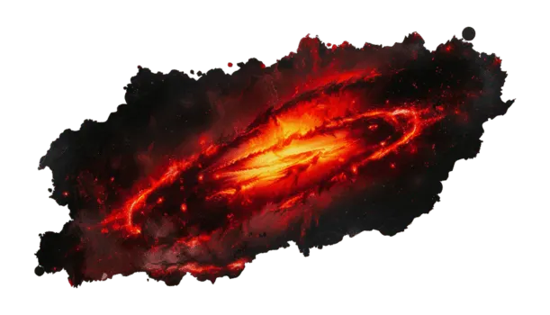
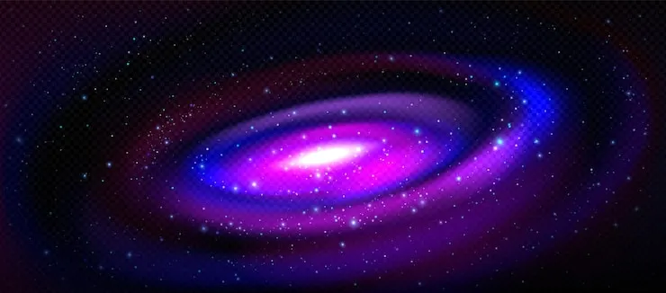
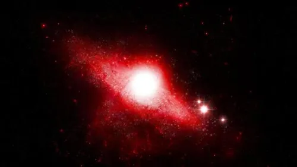
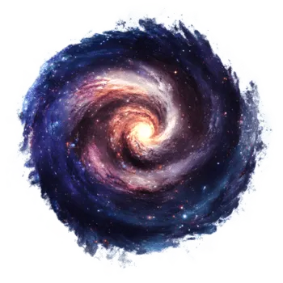

El concepto de terror cósmico, tradicionalmente relegado a la literatura de ficción especulativa, encuentra en la astrofísica contemporánea una dimensión profundamente real y tangible basada en las leyes de la física y la termodinámica. Cuando la humanidad contempla el firmamento nocturno, la aparente serenidad y el brillo estático de las estrellas ocultan un escenario caracterizado por cataclismos monumentales, flujos masivos de radiación letal y fuerzas gravitacionales capaces de desintegrar la materia ordinaria. El universo no es un refugio estático ni un entorno benigno diseñado para la albergación de la vida; por el contrario, es un sistema dinámico, violento y profundamente indiferente donde la existencia de estructuras complejas como los planetas habitables representa una frágil y efímera excepción frente a la implacable marea de procesos destructivos que operan a escala cósmica. Los peligros del universo abarcan desde eventos de escala local que pueden comprometer la biosfera de un mundo en cuestión de horas hasta transformaciones a escala macroscópica que tienen el potencial de reescribir las leyes físicas o alterar el tejido mismo del espacio-tiempo, demostrando que la verdadera magnitud del cosmos radica tanto en su inmensidad espacial como en su tremendo potencial destructivo.
Por ello dentro de nuestro sitio web te demostraremos distintas cosas a continuacion se veran visibles con las distintas secciones que tenemos sobre estos peligros.